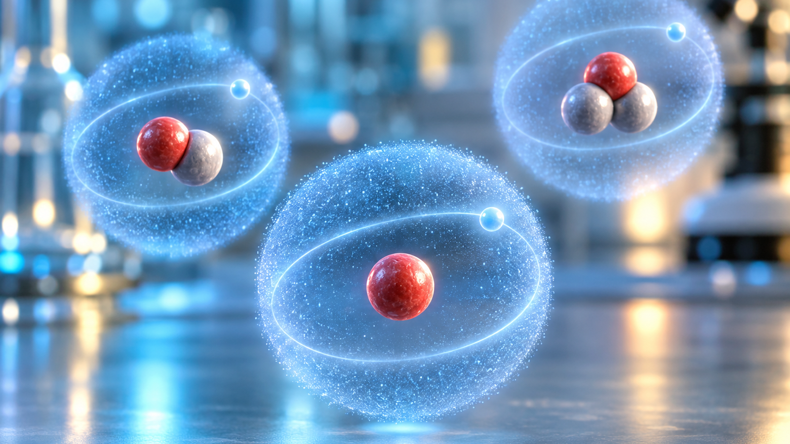
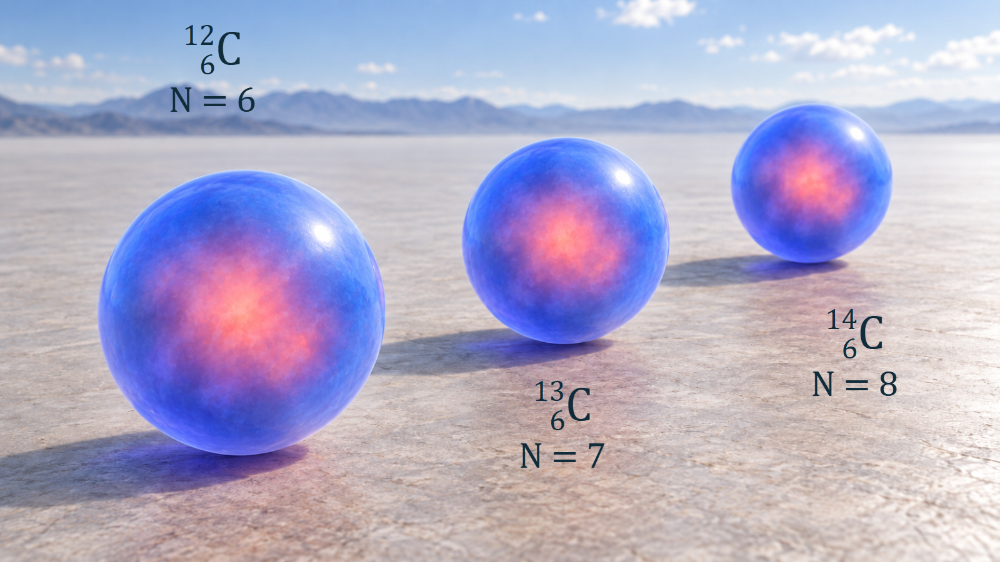

원자와 원자핵의 기초 · 005
동위원소의 의미
같은 원소 안에서 달라지는 원자핵의 구성과 성질

동위원소는 양성자 수는 같고 중성자 수가 다른 원자입니다. 화학적 정체성은 유지되지만 질량·안정성·핵반응 특성은 달라질 수 있습니다.
원자번호와 질량수의 구분
원자번호 Z는 양성자 수이고 중성자 수는 N입니다. 양성자와 중성자를 합친 질량수 A는 A=Z+N의 관계를 가집니다. 탄소-14는 양성자 6개와 중성자 8개로 이루어져 질량수가 14입니다.
수소 동위원소의 세 구성
중성인 수소 동위원소는 모두 양성자와 전자를 각각 1개씩 가지며, 아래 표처럼 중성자 수가 달라집니다. 전자 수와 핵의 양전하가 같으므로 전자배치가 닮지만, 핵의 질량과 안정성까지 같아지는 것은 아닙니다. 원자번호 Z는 원소를 묶는 기준이고 질량수 A는 그 원소 안에서 핵종을 나누는 기준입니다.
| 동위원소 | 양성자 | 중성자 | 안정성·대표 활용 |
|---|---|---|---|
| 수소-1 | 1 | 0 | 안정, 보통 물 |
| 중수소 | 1 | 1 | 안정, 중수와 핵융합 연구 |
| 삼중수소 | 1 | 2 | 방사성, 추적자와 핵융합 연구 |
탄소 동위원소의 안정성과 시간 측정
탄소-12와 탄소-14는 모두 양성자가 6개여서 화학적 행동이 거의 같습니다. 그러나 탄소-12는 안정하고 탄소-14는 시간이 지나며 붕괴합니다. 살아 있는 동안 계속되던 환경과의 탄소 교환이 사망 뒤 멈추므로, 남아 있는 탄소-14의 비율로 과거 생물 재료의 시간을 추정할 수 있습니다.

화학적 닮음과 핵적 차이
동위원소는 전자배치가 비슷해 화학반응에서는 닮았지만 핵의 질량과 안정성, 중성자 반응확률, 방사선 방출 여부는 다를 수 있습니다. 이 차이는 연대측정, 방사성 추적, 의학 진단, 원자로 연료와 감속재 선택에 활용됩니다.
중성자 수를 바꾸어 읽는 수소의 예시
양성자수 Z=1을 고정하고 중성자수 N을 0→1→2로 바꾸어 계산하면 A=Z+N에 따라 질량수는 1→2→3이 됩니다. 따라서 경수소·중수소·삼중수소는 다른 원소 세 개가 아니라 수소 안의 서로 다른 핵종입니다. 중성자가 늘어 질량이 거의 배 또는 세 배가 되지만 전자는 여전히 하나입니다. 수소는 이 질량비 차이가 커서 분자의 진동이나 확산, 일부 반응속도에 동위원소 효과가 뚜렷하게 나타납니다. 전자껍질이 같다는 설명만으로 모든 물성이 동일하다고 결론내릴 수 없습니다.
탄소 연대측정의 두 번째 예시
초기 탄소-14 비율을 알고 있고 외부 탄소가 들어오거나 빠져나가지 않는다는 단순한 조건을 가정합니다. 초기 비율의 절반이 남았다면 약 한 반감기, 4분의 1이 남았다면 두 반감기가 지난 것입니다. 탄소-14의 반감기를 약 5,730년으로 놓으면 각각 약 5,730년과 11,460년에 해당합니다. 이는 붕괴 원리를 설명하는 계산 예시입니다. 실제 달력연대는 초기 대기 조성의 변화, 해양 등 탄소 저장고의 차이, 시료 오염과 측정 불확도를 반영해 보정하므로 이 단순 계산을 그대로 확정 연대로 쓰지는 않습니다.
원자로·의료 분야의 적용
중수는 물 분자의 수소가 주로 중수소로 구성된 물이며 일부 원자로에서 중성자의 속도를 낮추는 감속재로 이용합니다. 원자핵의 종류가 달라지면 중성자 흡수·산란 특성이 달라지므로 화학식이 비슷한 물이라도 노심에서의 역할은 다릅니다. 환경분석에서는 물의 중수소·산소-18 비율을 비교해 물의 기원과 이동을 추적합니다. 의료 분야의 플루오린-18은 양전자를 방출하는 핵종으로 PET 검사에 쓰이는 추적자에 활용됩니다. 어느 동위원소를 고를지는 안정성, 방사선 종류와 반감기뿐 아니라 물질이 이동하는 화학적 경로에도 달려 있습니다.
같은 원소라는 표현의 한계
동위원소는 화학적 성질이 대체로 비슷하지만 완전히 같지는 않습니다. 특히 수소처럼 질량비가 큰 경우 반응속도 차이가 큽니다. 모든 동위원소가 방사성인 것도 아니며 안정동위원소도 많습니다.
동위원소 혼합물의 평균질량
주기율표의 원자량은 대개 한 종류 원자의 질량수가 아니라, 여러 동위원소의 질량을 존재비로 가중평균한 값에 대응합니다. 존재비는 이 계산에서 원자 개수의 비율입니다. 가상의 같은 원소에 속한 두 동위원소 질량을 10 u와 11 u, 원자분율을 각각 20%와 80%로 놓으면 평균 원자질량은 (10 u)×0.20+(11 u)×0.80=10.8 u입니다. 무거운 쪽 원자가 더 많으므로 평균은 11 u에 가깝습니다. 이때 개별 원자는 10 u 또는 11 u이며, 평균값인 10.8 u짜리 원자가 새로 생기는 것은 아닙니다. 원자량은 이 평균 질량을 원자질량단위 u로 나눈 무차원 값으로 구분합니다.
원자로 연료에서는 평균 원자량만으로 충분하지 않습니다. 핵분열성 동위원소의 원자분율이 반응률을 바꾸므로 U-235와 U-238 재고를 따로 계산합니다. 농축도도 질량분율과 원자분율을 구분해 사용해야 합니다.
동위원소 조성과 반응률
동위원소 존재비는 원료의 기원과 처리과정에 따라 달라질 수 있습니다. 자연 존재비를 적용할 수 있는지, 농축·희석·붕괴로 조성이 달라졌는지 확인해야 합니다. 핵반응률과 방사능은 각 동위원소 수밀도와 단면적 또는 붕괴상수를 따로 적용해 더합니다.
핵심 정리
동위원소는 양성자 수가 같고 중성자 수가 다른 핵종입니다. 원소명은 유지되지만 질량, 핵 안정성, 붕괴와 중성자 반응이 달라져 발전·의료·환경분석에서 서로 다른 역할을 맡습니다.